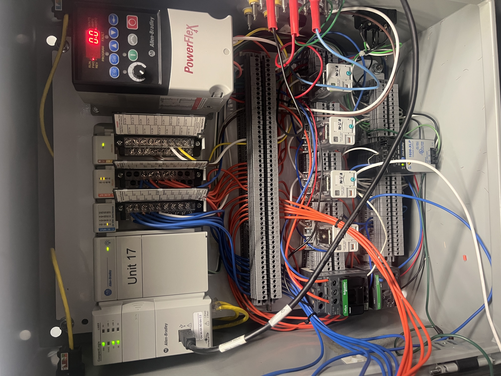
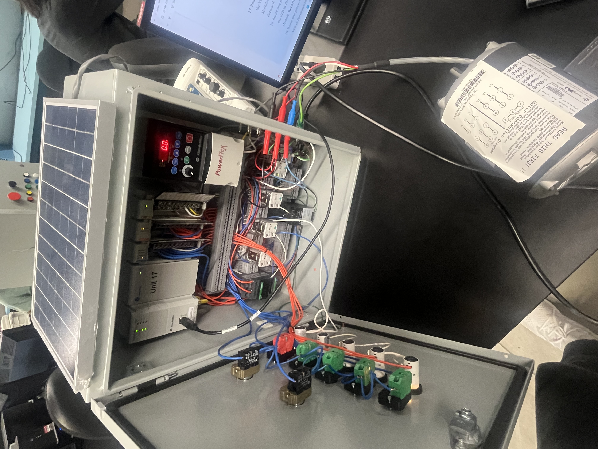
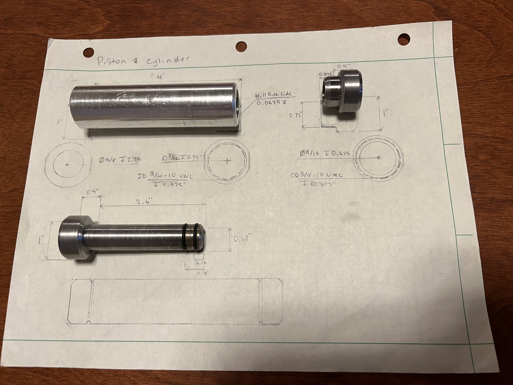

Designed and built a complete PLC-controlled system integrating five indicators, five pushbuttons, and two mushroom-head emergency stops. A solar panel served as the primary analog input, allowing the PLC to modulate motor speed based on real-time light intensity.
Using Studio 5000, I developed all control logic including forward/reverse operation, system shutdown, and additional modes that simulated real-world signaling patterns such as streetlight and pedestrian “walk/stop” sequences. The project included full panel wiring, I/O configuration, safety integration, and ladder logic programming.


A fire piston is a precision piston-and-cylinder device that ignites tinder through rapid compression. The piston was machined from aluminum alloy and the cylinder from steel using both lathe and milling operations.
The project also included internal and external threading to create a functional tinder‑storage compartment. The final assembly is lightweight and demonstrates tight machining tolerances and smooth compression.
